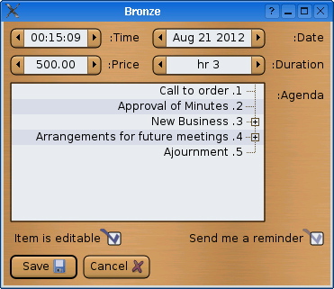

The QStyle class was introduced with Qt 2.0 to provide a means of encapsulating an application's look and feel. Classes such as QWindowsStyle, QMotifStyle, and QCDEStyle implemented the look and feel for the platforms and desktop environments on which Qt ran at the time. Qt 4.3 provides eight styles, in addition to the QStyle abstract base class and the convenience base class QCommonStyle. Figure 19.16 shows how they relate to each other.
For Qt developers, the QStyle architecture makes it possible to develop a custom look and feel by subclassing QStyle or one of the existing styles. We can perform minor customizations on an existing style (e.g., QWindowsStyle), or we can develop an entire custom style from scratch.
The QStyle API consists of functions for drawing graphical elements (drawPrimitive(), drawControl(), drawComplexControl(), etc.) and for querying the style (pixelMetrics(), styleHint(), hitTest(), etc.). The QStyle member functions typically take a QStyleOption object that holds both general information about the widget to be drawn (such as its palette) and widget-specific information (e.g., the text of a button). The functions also take an optional pointer to a QWidget, to cater to situations when the QStyleOption doesn't provide all the necessary information.
Suppose we want to create a MyPushButton class, which would look like a standard Qt push button but without deriving from QPushButton. (This example is rather contrived, but it will help us to clarify the relationship between widgets and styles.) In the MyPushButton paint event handler, we would set up a QStyleOption (actually, a QStyleOptionButton) and call QStyle::drawControl() as follows:
void MyPushButton::paintEvent(QPaintEvent * /* event */)
{
QPainter painter(this);
QStyleOptionButton option;
option.initFrom(this);
if (isFlat())
option.features |= QStyleOptionButton::Flat;
option.text = text();
style()->drawControl(QStyle::CE_PushButton, &option, &painter,
this);
}The QStyleOption::initFrom() function initializes the fundamental member variables that represent a widget, such as rect, state (enabled, focused, etc.), and palette. Member variables specific to QStyleOptionButton must be initialized manually. In the MyPushButton example, we initialize features and text and let icon and iconSize take their default values.
The QWidget::style() function returns the appropriate style for drawing the widget. The style is normally set for the entire application using QApplication::setStyle(), but it is also possible to override it for individual widgets using QWidget::setStyle().
The drawControl() function is reimplemented by the various QStyle subclasses to draw QPushButton and other simple widgets. A typical implementation might look like this:
void QMotifStyle::drawControl(ControlElement element,
const QStyleOption *option,
QPainter *painter,
const QWidget *widget) const
{
switch (element) {
case CE_CheckBox:
...
case CE_RadioButton:
...
case CE_PushButton:
if (const QStyleOptionButton *buttonOption =
qstyleoption_cast<const QStyleOptionButton *>(option)) {
// draw push button
}
break;
...
}
}The first parameter, element, indicates the type of widget to draw. If the type is CE_PushButton, the style attempts to cast the option parameter to QStyleOptionButton. If the cast is successful, it draws the push button described by QStyleOptionButton. The cast from const QStyleOption * to const QStyleOptionButton * is performed using qstyleoption_cast<T>(), which returns a null pointer if option doesn't point to a QStyleOptionButton instance.
Instead of relying on the QStyleOption, a QStyle subclass may also query the widget directly:
case CE_PushButton:
if (const QPushButton *button =
qobject_cast<const QPushButton *>(widget)) {
// draw push button
}
break;The drawback with this version is that the style code is tied to QPushButton and thus cannot be used to render, say, a MyPushButton. For this reason, the built-in QStyle subclasses use the QStyleOption parameter whenever possible to obtain information about the widget to draw, and resort to using the QWidget parameter only if that is the only thing that will provide the required information.
In the rest of this section, we will review the code for the Bronze style shown in Figure 19.17. The Bronze style features round buttons with a gradient background, unconventional placement of spin box buttons, extravagant checkmarks, and a "brushed bronze" background. To implement this, it uses advanced 2D graphics features such as antialiasing, semi-transparency, linear gradients, and composition modes.
Here is the BronzeStyle class definition:
class BronzeStyle : public QWindowsStyle
{
Q_OBJECT
public:
BronzeStyle() {}
void polish(QPalette &palette);
void polish(QWidget *widget);
void unpolish(QWidget *widget);
int styleHint(StyleHint which, const QStyleOption *option,
const QWidget *widget = 0,
QStyleHintReturn *returnData = 0) const;
int pixelMetric(PixelMetric which, const QStyleOption *option,
const QWidget *widget = 0) const;
void drawPrimitive(PrimitiveElement which,
const QStyleOption *option, QPainter *painter,
const QWidget *widget = 0) const;
void drawComplexControl(ComplexControl which,
const QStyleOptionComplex *option,
QPainter *painter,
const QWidget *widget = 0) const;
QRect subControlRect(ComplexControl whichControl,
const QStyleOptionComplex *option,
SubControl whichSubControl,
const QWidget *widget = 0) const;
public slots:
QIcon standardIconImplementation(StandardPixmap which,
const QStyleOption *option,
const QWidget *widget = 0) const;
private:
void drawBronzeFrame(const QStyleOption *option,
QPainter *painter) const;
void drawBronzeBevel(const QStyleOption *option,
QPainter *painter) const;
void drawBronzeCheckBoxIndicator(const QStyleOption *option,
QPainter *painter) const;
void drawBronzeSpinBoxButton(SubControl which,
const QStyleOptionComplex *option,
QPainter *painter) const;
};
When creating a custom style, we usually base it on an existing style so that we don't have to do everything from scratch. For this example, we chose QWindowsStyle, the classic Windows style. Even though the Bronze style doesn't look much like the Windows style, there is a large body of code in QWindowsStyle and its base class QCommonStyle that can be reused as is to implement just about any style we can imagine. This is why QMacStyle is derived from QWindowsStyle even though they look very different.
BronzeStyle reimplements several public functions declared by QStyle. The polish() and unpolish() functions are called when the style is installed or uninstalled. They make it possible to tweak the widgets or the palette. The other public functions are either query functions (styleHint(), pixelMetric(), subControlRect()) or functions that draw a graphical element (drawPrimitive(), drawComplexControl()).
BronzeStyle also provides a public slot called standardIconImplementation(). This slot is discovered by Qt using introspection and is invoked when necessary as though it had been a virtual function. Qt sometimes uses this idiom to add functions that should have been virtual without breaking binary compatibility with earlier Qt 4 releases. It is expected that Qt 5 will replace the standardIconImplementation() slot with a standardIcon() virtual function.
The BronzeStyle class also declares a few private functions. These will be explained after we have covered the public functions.
void BronzeStyle::polish(QPalette &palette)
{
QPixmap backgroundImage(":/images/background.png");
QColor bronze(207, 155, 95);
QColor veryLightBlue(239, 239, 247);
QColor lightBlue(223, 223, 239);
QColor darkBlue(95, 95, 191);
palette = QPalette(bronze);
palette.setBrush(QPalette::Window, backgroundImage);
palette.setBrush(QPalette::BrightText, Qt::white);
palette.setBrush(QPalette::Base, veryLightBlue);
palette.setBrush(QPalette::AlternateBase, lightBlue);
palette.setBrush(QPalette::Highlight, darkBlue);
palette.setBrush(QPalette::Disabled, QPalette::Highlight,
Qt::darkGray);
}One of the outstanding characteristics of the Bronze style is its color scheme. No matter what colors the user has set on their window system, the Bronze style has a bronze appearance. A custom style's color scheme can be set up in one of two ways: We can ignore the widget's QPalette and draw everything using our favorite colors (bronze, light bronze, dark bronze, etc.), or we can reimplement QStyle::polish(QPalette &) to adjust the application's or widget's palette and then use the palette. The second approach is more flexible because we can override the color scheme in a subclass (say, SilverStyle) by reimplementing polish().
The concept of polishing is generalized to widgets. When a style is applied to a widget, polish(QWidget *) is called, allowing us to perform last-minute customizations:
void BronzeStyle::polish(QWidget *widget)
{
if (qobject_cast<QAbstractButton *>(widget)
|| qobject_cast<QAbstractSpinBox *>(widget))
widget->setAttribute(Qt::WA_Hover, true);
}Here, we reimplement polish(QWidget *) to set the Qt::WA_Hover attribute on buttons and spin boxes. When this attribute is set, a paint event is generated when the mouse enters or leaves the area occupied by a widget. This gives us the opportunity to paint a widget differently depending on whether or not the mouse is hovering over it.
This function is called after the widget has been created and before it is shown for the first time, using the current style. It is then only ever called if the current style is dynamically changed.
void BronzeStyle::unpolish(QWidget *widget)
{
if (qobject_cast<QAbstractButton *>(widget)
|| qobject_cast<QAbstractSpinBox *>(widget))
widget->setAttribute(Qt::WA_Hover, false);
}Just as polish(QWidget *) is called when a style is applied to a widget, unpolish(QWidget *) is called whenever the style is dynamically changed. The purpose of unpolish() is to undo the effects of the polish() so that the widget is in a state to be polished by the new style. Well-behaved styles try to undo what they did in their polish() function.
A common use of polish(QWidget *) is to install our style subclass as an event filter on a widget. This is necessary for some more advanced customizations; for example, QWindowsVistaStyle and QMacStyle use this technique to animate default buttons.
int BronzeStyle::styleHint(StyleHint which, const QStyleOption *option,
const QWidget *widget,
QStyleHintReturn *returnData) const
{
switch (which) {
case SH_DialogButtonLayout:
return int(QDialogButtonBox::MacLayout);
case SH_EtchDisabledText:
return int(true);
case SH_DialogButtonBox_ButtonsHaveIcons:
return int(true);
case SH_UnderlineShortcut:
return int(false);
default:
return QWindowsStyle::styleHint(which, option, widget,
returnData);
}
}The styleHint() function returns some hints about the look and feel provided by the style. For example, we return MacLayout for SH_DialogButtonLayout to signify that we want QDialogButtonBox to follow the Mac OS X guidelines, with OK to the right of Cancel. The return type of styleHint() is int. For the few style hints that cannot be represented as integers, styleHint() provides a pointer to a QStyleHintReturn object that can be used.
int BronzeStyle::pixelMetric(PixelMetric which,
const QStyleOption *option,
const QWidget *widget) const
{
switch (which) {
case PM_ButtonDefaultIndicator:
return 0;
case PM_IndicatorWidth:
case PM_IndicatorHeight:
return 16;
case PM_CheckBoxLabelSpacing:
return 8;
case PM_DefaultFrameWidth:
return 2;
default:
return QWindowsStyle::pixelMetric(which, option, widget);
}
}The pixelMetric() function returns a dimension in pixels that is used for a user interface element. By reimplementing this function, we affect both the drawing of the built-in Qt widgets and their size hints.
We return 0 for PM_ButtonDefaultIndicator because we don't want to reserve any extra spacing around default buttons (the default is 1 pixel in QWindowsStyle). For checkboxes, PM_IndicatorWidth and PM_IndicatorHeight control the size of the indicator (usually a small square), and PM_CheckBoxLabelSpacing controls the spacing between the checkbox indicator and the text to its right (see Figure 19.18). Finally, PM_DefaultFrameWidth defines the width of the line used around QFrame, QPushButton, QSpinBox, and many other widgets. For other PM_xxx values, we inherit the pixel metric value from the base class.
QIcon BronzeStyle::standardIconImplementation(StandardPixmap which,
const QStyleOption *option, const QWidget *widget) const
{
QImage image = QWindowsStyle::standardPixmap(which, option, widget)
.toImage();
if (image.isNull())
return QIcon();
QPalette palette;
if (option) {
palette = option->palette;
} else if (widget) {
palette = widget->palette();
}
QPainter painter(&image);
painter.setOpacity(0.25);
painter.setCompositionMode(QPainter::CompositionMode_SourceAtop);
painter.fillRect(image.rect(), palette.highlight());
painter.end();
return QIcon(QPixmap::fromImage(image));
}As explained earlier, Qt invokes the standardIconImplementation() slot to obtain the standard icons that should be used in user interfaces. We call the base class's standardPixmap() to obtain the icon and try to give it a slight blue tint, to make it blend in with the rest of the style. The tinting is achieved by drawing a 25% opaque blue color on top of the existing icon. By using the SourceAtop composition mode, we make sure that the existing transparent areas stay transparent, instead of becoming 25% blue and 75% transparent. We describe composition modes in the "High-Quality Rendering with QImage" section of Chapter 8 (p. 195).
void BronzeStyle::drawPrimitive(PrimitiveElement which,
const QStyleOption *option,
QPainter *painter,
const QWidget *widget) const
{
switch (which) {
case PE_IndicatorCheckBox:
drawBronzeCheckBoxIndicator(option, painter);
break;
case PE_PanelButtonCommand:
drawBronzeBevel(option, painter);
break;
case PE_Frame:
drawBronzeFrame(option, painter);
break;
case PE_FrameDefaultButton:
break;
default:
QWindowsStyle::drawPrimitive(which, option, painter, widget);
}
}Qt calls the drawPrimitive() function to draw "primitive" user interface elements. These elements are typically used by several widgets. For example, PE_IndicatorCheckBox is used by QCheckBox, QGroupBox, and QItemDelegate to draw a checkbox indicator.
In the Bronze style, we reimplement drawPrimitive() to provide a custom look to checkbox indicators, push buttons, and frames. For example, Figure 19.19 shows the structure of a QPushButton which the Bronze style must handle. The drawBronzeCheckBoxIndicator(), drawBronzeBevel(), and drawBronzeFrame() functions are private functions that we will review later.

For PE_FrameDefaultButton, we simply do nothing, because we don't want to draw an extra frame around default buttons. For all other primitive elements, we simply forward the call to the base class.
void BronzeStyle::drawComplexControl(ComplexControl which,
const QStyleOptionComplex *option,
QPainter *painter,
const QWidget *widget) const
{
if (which == CC_SpinBox) {
drawBronzeSpinBoxButton(SC_SpinBoxDown, option, painter);
drawBronzeSpinBoxButton(SC_SpinBoxUp, option, painter);
QRect rect = subControlRect(CC_SpinBox, option,
SC_SpinBoxEditField)
.adjusted(-1, 0, +1, 0);
painter->setPen(QPen(option->palette.mid(), 1.0));
painter->drawLine(rect.topLeft(), rect.bottomLeft());
painter->drawLine(rect.topRight(), rect.bottomRight());
} else {
return QWindowsStyle::drawComplexControl(which, option, painter,
widget);
}
}Qt calls the drawComplexControl() function to draw widgets that consist of multiple subcontrols—notably QSpinBox. Since we want to give a radically new look to QSpinBox, we reimplement drawComplexControl() and handle the CC_SpinBox case.
To draw a QSpinBox we must draw the up and down buttons and the frame around the entire spin box. (The structure of a QSpinBox is shown in Figure 19.20.) Since the code required for drawing an up button is almost identical to that for drawing a down button, we have factored it out into the drawBronzeSpinBoxButton() private function. The function also draws the frame around the entire spin box.
QSpinBox uses a QLineEdit to represent the editable part of the widget, so we don't need to draw that part of the widget. However, to cleanly separate the QLineEdit and the spin box buttons, we draw two light brown vertical lines at the edge of the QLineEdit. The QLineEdit's geometry is obtained by calling subControlRect() with SC_SpinBoxEditField as the third argument.
QRect BronzeStyle::subControlRect(ComplexControl whichControl,
const QStyleOptionComplex *option,
SubControl whichSubControl,
const QWidget *widget) const
{
if (whichControl == CC_SpinBox) {
int frameWidth = pixelMetric(PM_DefaultFrameWidth, option,
widget);
int buttonWidth = 16;
switch (whichSubControl) {
case SC_SpinBoxFrame:
return option->rect;
case SC_SpinBoxEditField:
return option->rect.adjusted(+buttonWidth, +frameWidth,
-buttonWidth, -frameWidth);
case SC_SpinBoxDown:
return visualRect(option->direction, option->rect,
QRect(option->rect.x(), option->rect.y(),
buttonWidth,
option->rect.height()));
case SC_SpinBoxUp:
return visualRect(option->direction, option->rect,
QRect(option->rect.right() - buttonWidth,
option->rect.y(),
buttonWidth,
option->rect.height()));
default:
return QRect();
}
} else {
return QWindowsStyle::subControlRect(whichControl, option,
whichSubControl, widget);
}
}
Qt calls the subControlRect() function to determine where the subcontrols of a widget are located. For example, QSpinBox calls it to determine where to place its QLineEdit. It is also used when reacting to mouse events, to find out which subcontrol was clicked. In addition, we called it ourselves when implementing drawComplexControl(), and we will call it again from drawBronzeSpinBoxButton().
In our reimplementation, we check whether the widget is a spin box, and if this is the case, we return meaningful rectangles for the spin box's frame, edit field, down button, and up button. Figure 19.20 shows how these rectangles relate to each other. For the other widgets, including QPushButton, we rely on the base class's implementation.
The rectangles we return for SC_SpinBoxDown and SC_SpinBoxUp are passed through QStyle::visualRect(). Calls to visualRect() have the following syntax:
visualRect(direction, outerRect, logicalRect)
If the direction is Qt::LeftToRight, then logicalRect is returned unchanged; otherwise, logicalRect is flipped with respect to outerRect. This ensures that graphical elements are mirrored in right-to-left mode, which is used for languages such as Arabic and Hebrew. For symmetric elements such as SC_SpinBoxFrame and SC_SpinBoxEditField, flipping would have no effect, so we don't bother calling visualRect(). To test a style in right-to-left mode, we can simply pass the -reverse command-line option to an application that uses the style. Figure 19.21 shows the Bronze style in right-to-left mode.

This completes our review of the public functions reimplemented from QWindowsStyle. The next four functions are private drawing functions.
void BronzeStyle::drawBronzeFrame(const QStyleOption *option,
QPainter *painter) const
{
painter->save();
painter->setRenderHint(QPainter::Antialiasing, true);
painter->setPen(QPen(option->palette.foreground(), 1.0));
painter->drawRect(option->rect.adjusted(+1, +1, -1, -1));
painter->restore();
}The drawBronzeFrame() function was called from drawPrimitive() to draw a PE_Frame primitive element. This is used to draw the frame around a QFrame (or a subclass, such as QTreeView) when the frame shape is QFrame::StyledPanel. (The other frame shapes, such as Box, Panel, and VLine, are drawn directly by QFrame without going through the style.)
The frame we draw is an antialiased 1-pixel-wide outline around the widget, using the palette's foreground brush (available through the QStyleOption's palette member variable). Since the rectangle is antialiased and is located on an integer coordinate, the resulting effect is a blurred 2-pixel-wide outline, which is precisely what we want for the Bronze style.
To ensure that we leave the QPainter in the same state as we got it, we call save() before we call setRenderHint() and setPen(), and call restore() at the end. This is necessary because Qt optimizes drawing by reusing the same QPainter to draw several graphical elements.
The next function we will study is drawBronzeBevel(), which draws the background of a QPushButton:
void BronzeStyle::drawBronzeBevel(const QStyleOption *option,
QPainter *painter) const
{
QColor buttonColor = option->palette.button().color();
int coeff = (option->state & State_MouseOver) ? 115 : 105;
QLinearGradient gradient(0, 0, 0, option->rect.height());
gradient.setColorAt(0.0, option->palette.light().color());
gradient.setColorAt(0.2, buttonColor.lighter(coeff));
gradient.setColorAt(0.8, buttonColor.darker(coeff));
gradient.setColorAt(1.0, option->palette.dark().color());We start by setting up the QLinearGradient that is used to fill the background. The gradient is light at the top and dark at the bottom, and goes through intermediate shades of bronze in between. The intermediate steps at 0.2 and 0.8 contribute to giving the button a fake 3D effect. The coeff factor controls how much of a 3D look the button should have. When the mouse hovers over the button, we use 115% as the coeff to make the button rise up slightly.
double penWidth = 1.0;
if (const QStyleOptionButton *buttonOpt =
qstyleoption_cast<const QStyleOptionButton *>(option)) {
if (buttonOpt->features & QStyleOptionButton::DefaultButton)
penWidth = 2.0;
}The Bronze style uses a 2-pixel-wide outline around default buttons and a 1-pixel-wide outline otherwise. To find out whether the push button is a default button, we cast option to a const QStyleOptionButton * and check its features member variable.
QRect roundRect = option->rect.adjusted(+1, +1, -1, -1);
if (!roundRect.isValid())
return;
int diameter = 12;
int cx = 100 * diameter / roundRect.width();
int cy = 100 * diameter / roundRect.height();We define some more variables that will be used below to draw the button. The cx and cy coefficients specify how rounded we want the push button corners to be. They are computed in terms of diameter, which specifies the rounded corners' desired diameters.
painter->save();
painter->setPen(Qt::NoPen);
painter->setBrush(gradient);
painter->drawRoundRect(roundRect, cx, cy);
if (option->state & (State_On | State_Sunken)) {
QColor slightlyOpaqueBlack(0, 0, 0, 63);
painter->setBrush(slightlyOpaqueBlack);
painter->drawRoundRect(roundRect, cx, cy);
}
painter->setRenderHint(QPainter::Antialiasing, true);
painter->setPen(QPen(option->palette.foreground(), penWidth));
painter->setBrush(Qt::NoBrush);
painter->drawRoundRect(roundRect, cx, cy);
painter->restore();
}Finally, we perform the drawing. We start by drawing the background using the QLinearGradient that we defined earlier in the function. If the button is currently pressed (or is a toggle button in its "on" state), we draw a 75% transparent black color on top of it to make it a bit darker.
Once we have drawn the background, we turn on antialiasing to obtain smooth rounded corners, we set an appropriate pen, we clear the brush, and we draw the outline.
void BronzeStyle::drawBronzeSpinBoxButton(SubControl which,
const QStyleOptionComplex *option, QPainter *painter) const
{
PrimitiveElement arrow = PE_IndicatorArrowLeft;
QRect buttonRect = option->rect;
if ((which == SC_SpinBoxUp)
!= (option->direction == Qt::RightToLeft)) {
arrow = PE_IndicatorArrowRight;
buttonRect.translate(buttonRect.width() / 2, 0);
}
buttonRect.setWidth((buttonRect.width() + 1) / 2);
QStyleOption buttonOpt(*option);
painter->save();
painter->setClipRect(buttonRect, Qt::IntersectClip);
if (!(option->activeSubControls & which))
buttonOpt.state &= ~(State_MouseOver | State_On | State_Sunken);
drawBronzeBevel(&buttonOpt, painter);
QStyleOption arrowOpt(buttonOpt);
arrowOpt.rect = subControlRect(CC_SpinBox, option, which)
.adjusted(+3, +3, -3, -3);
if (arrowOpt.rect.isValid())
drawPrimitive(arrow, &arrowOpt, painter);
painter->restore();
}
The drawBronzeSpinBoxButton() function draws the up or down button of a spin box, depending on whether which is SC_SpinBoxDown or SC_SpinBoxUp. We start by setting up the arrow to draw on the button (a left or a right arrow) and the rectangle in which we draw the button.
If which is SC_SpinBoxDown (or which is SC_SpinBoxUp and the layout direction is right-to-left), we use a left arrow (PE_IndicatorArrowLeft) and we draw the button in the left half of the spin box's rectangle; otherwise, we use a right arrow and we draw the button in the right half.
To draw the button, we call drawBronzeBevel() with a QStyleOption that correctly reflects the state of the spin box button we want to draw. For example, if the mouse is hovering over the spin box but not over the spin box button corresponding to which, we clear the State_MouseOver, State_On, and State_Sunken flags from the QStyleOption's state. This is necessary to ensure that the two spin box buttons behave independently of each other.
Before we perform any drawing, we call setClipRect() to set the clipping rectangle on the QPainter. This is because we want to draw only the left or right half of a button bevel, not the entire button bevel.
Finally, at the end, we draw the arrow by calling drawPrimitive(). The QStyleOption used to draw the arrow is set up with a rectangle that corresponds to the spin box button's rectangle (SC_SpinBoxUp or SC_SpinBoxDown) but is a bit smaller, to obtain a smaller arrow.
void BronzeStyle::drawBronzeCheckBoxIndicator(
const QStyleOption *option, QPainter *painter) const
{
painter->save();
painter->setRenderHint(QPainter::Antialiasing, true);
if (option->state & State_MouseOver) {
painter->setBrush(option->palette.alternateBase());
} else {
painter->setBrush(option->palette.base());
}
painter->drawRoundRect(option->rect.adjusted(+1, +1, -1, -1));
if (option->state & (State_On | State_NoChange)) {
QPixmap pixmap;
if (!(option->state & State_Enabled)) {
pixmap.load(":/images/checkmark-disabled.png");
} else if (option->state & State_NoChange) {
pixmap.load(":/images/checkmark-partial.png");
} else {
pixmap.load(":/images/checkmark.png");
}
QRect pixmapRect = pixmap.rect()
.translated(option->rect.topLeft())
.translated(+2, -6);
QRect painterRect = visualRect(option->direction, option->rect,
pixmapRect);
if (option->direction == Qt::RightToLeft) {
painter->scale(-1.0, +1.0);
painterRect.moveLeft(-painterRect.right() - 1);
}
painter->drawPixmap(painterRect, pixmap);
}
painter->restore();
}
Although the drawBronzeCheckBoxIndicator() code might look complex at first sight, drawing a checkbox indicator is actually quite simple: We draw a rectangle using drawRoundRect(), and we draw the checkmark using drawPixmap(). The complications arise because we want to use a different background color when the mouse hovers over the checkbox indicator, because we distinguish between normal checkmarks, disabled checkmarks, and partial checkmarks (for tri-state checkboxes), and because we flip the checkmark in right-to-left mode (by flipping the QPainter's coordinate system).
We have now completed the implementation of our Bronze QStyle subclass. In the screenshots shown in Figure 19.17, a QDateEdit and a QTreeWidget are shown, both of which use the Bronze style even though we have not written any code specifically for them. This is because QDateEdit, QDoubleSpinBox, and some other widgets are all "spin boxes", and so make use of the Bronze style code for rendering themselves; similarly, QTreeWidget and all other widget classes that are derived from QFrame get the custom look defined by the Bronze style.
The Bronze style presented in this section can easily be used in an application, by linking it in and calling
QApplication::setStyle(new BronzeStyle);
in the application's main() function. Widgets that aren't handled explicitly by the Bronze style will have a classic Windows look. Custom styles can also be compiled as plugins and used afterwards in Qt Designer to preview forms using that style. In Chapter 21, we will show how to make the Bronze style available as a Qt plugin.
Although the style developed here is only about 300 lines of code, be aware that developing a fully functional custom style is a major undertaking that typically requires 3000 to 5000 lines of C++ code. For this reason, it is often easier and more convenient to use Qt style sheets whenever possible, or to use a hybrid approach, combining style sheets and a custom QStyle. If you plan to create a custom QStyle, implementing styles and style-aware widgets is covered in depth in the document http://doc.trolltech.com/4.3/style-reference.html.